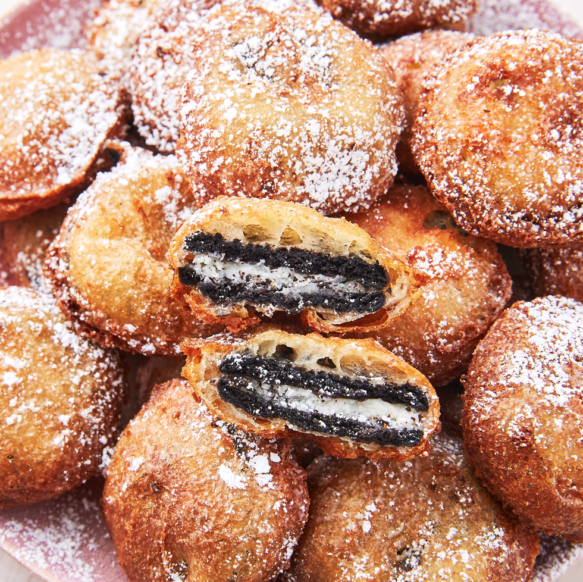

Fried Oreos

Description
As a classic American dessert, few foods are as indulgent and delicious as the fried Oreo.
This treat takes the sweet and creamy cookie we all know and dips it in batter,
then throws it in the fryer, resulting in an oozy, meltingly delicious mess.
With a few ingredients and some time in the kitchen, you too can indulge in the fried Oreo!
Ingredients
- 2 quarts vegetable oil for frying
- 1 cup milk
- 1 large egg
- 2 teaspoons vegetable oil
- 1 cup pancake mix
- 1 (18 ounce) package of Oreos
Steps
- Heat oil in a deep fryer or large saucepan to 375 degrees F (190 degrees C).
- Whisk milk, egg, and 2 teaspoons of vegetable oil in a large bowl until smooth. Stir in the pancake mix until no dry lumps remain.
- Dip cookies into batter, one at a time, and carefully place into hot oil. Fry in batches, 4 or 5 at a time, until cookies are golden brown, about 2 minutes. Drain on a paper towel-lined plate before serving.